A three-dimensional panel often needs two-dimensional companions: ordinary ggplot2 layers drawn inside it, flat projections of the data on the floor and walls of the box, or a contour map and a profile next to it. This article shows each of these, then arranges 3D panels with 2D panels using a second package. Installation is covered in Get started. The composition sections also use patchwork, the package that arranges several ggplot2 plots on one page.
Plain ggplot2 layers in a 3D panel
The data below trace a helix. track contains an angle
t, the positions x and y on a
unit circle, and a height z that rises from 1 to 3 over two
turns. The ends are labelled in a second table.
track <- data.frame(t = seq(0, 4 * pi, length.out = 80))
track$x <- cos(track$t)
track$y <- sin(track$t)
track$z <- 1 + track$t / (2 * pi)
ends <- track[c(1, nrow(track)), ]
ends$label <- c("start", "end")geom_path(), geom_point() and
geom_text() are the ggplot2 layers, used unchanged. Inside
coord_3d() they read the z mapping and are placed and depth
sorted like geom_path_3d(), geom_point_3d()
and geom_text_3d().
h <- ggplot(track, aes(x, y, z = z))
h + geom_path(colour = "#2E6F9E", linewidth = 0.8) +
geom_point(data = ends, colour = "#B5342B", size = 3) +
geom_text(aes(label = label), data = ends, nudge_x = 0.35, size = 5) +
coord_3d()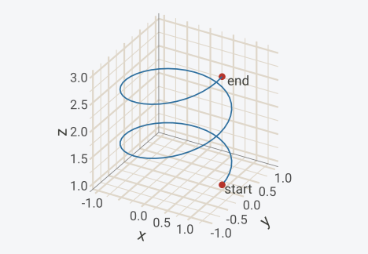
Registered ggplot2 layers include points, paths, lines, segments,
text, labels, polygons, rectangles, tiles and intervals. Contour and
density contours draw each line at the height of its level. Filled
contours draw horizontal bands at their level midpoints, as shown in Terraced filled contours. A layer
without a z mapping is drawn at z = 0, and the z scale extends to
include 0. Here the path is drawn a second time with
inherit.aes = FALSE, so it lies flat at height 0 below the
helix.
h + geom_path(colour = "#2E6F9E", linewidth = 0.8) +
geom_path(aes(x, y), inherit.aes = FALSE, colour = "#5C6166",
linewidth = 0.8) +
coord_3d()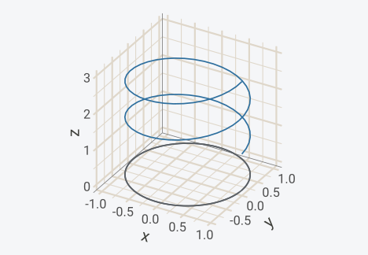
Projecting points onto the floor and walls
A position of -Inf or Inf places a mark on
the matching face of the box, as Inf places a mark on the
panel edge in ggplot2. The cloud below has 40 points whose height
follows x + y with noise.
set.seed(1)
cloud <- data.frame(x = rnorm(40), y = rnorm(40))
cloud$z <- cloud$x + cloud$y + rnorm(40, sd = 0.5)Mapping z = -Inf draws each point’s shadow on the floor,
and a dropline joins each point to it. Mapping y = Inf
draws the projection onto the back wall at the largest y, where the
points show z against x.
k <- ggplot(cloud, aes(x, y, z = z))
k + geom_point_3d(aes(z = -Inf), colour = "#5C6166", size = 1.5) +
geom_point_3d(aes(y = Inf), colour = "#9E5E0F", size = 1.5) +
geom_dropline_3d(onto = "zmin", colour = "#5C6166") +
geom_point_3d(size = 2.5) +
coord_3d()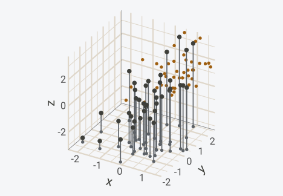
Shadows and wall projections use the same x, y and z scales as the points, so each projection lies on the box grid at the coordinates it shares with its point. The scales are trained on the finite positions only, so the box keeps the range of the data.
A whole 2D plot on a wall
A projection shows the points; a 2D plot on the wall can show a
summary of them as well. annotation_plot_3d() takes a
finished 2D ggplot and draws its panel, every layer with its background
and grid lines, on a plane of the box. The plot below shows z against x
with a linear fit, and it is placed on the back wall at the largest y.
It keeps its own coordinates, so its x and z line up with the axes of
the box.
side <- ggplot(cloud, aes(x, z)) +
geom_point(colour = "#9E5E0F", size = 1) +
geom_smooth(method = "lm", formula = y ~ x, colour = "#2E6F9E")
k + annotation_plot_3d(side, plane = "xz", at = Inf) +
geom_point_3d(size = 2.5) +
coord_3d()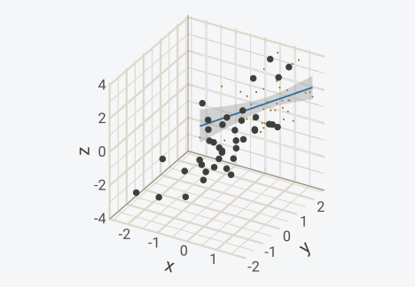
The vector route places the panel’s marks in the wall plane, where they are foreshortened with the box and covered by geometry in front. Text faces the viewer and draws over the scene. The panel background and grid travel with the panel; its outer axes, title and legend stay outside the embedded panel.
The two letters of the plane name select the directions of the 2D plot’s x and y axes. The remaining coordinate is fixed by the placement argument. A four-value extent can position the plot independently of its original ranges.
bars <- ggplot(mtcars, aes(factor(cyl))) + geom_bar(fill = "#2E6F9E")
k + annotation_plot_3d(bars, plane = "xy", at = -Inf,
extent = c(-2, 2, -2, 2), alpha = 0.7) +
geom_point_3d(size = 2) + coord_3d()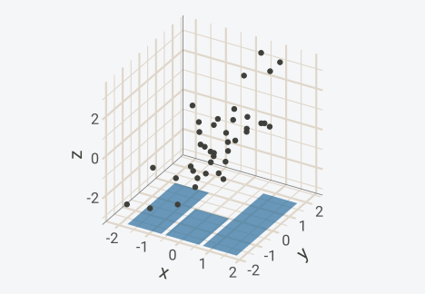
For a dense panel, choose the raster route and set its image resolution. The following example uses a small resolution to keep the article fast. Both routes accept one 2D panel; place several panels with separate calls.
k + annotation_plot_3d(side, plane = "xz", at = Inf,
backend = "raster", resolution = 64) +
geom_point_3d(size = 2.5) + coord_3d()
See annotation_plot_3d() for all plane orientations and placement arguments.
Small multiples in depth
facet_slices_3d() splits the data like
facet_wrap() and stacks the subsets on parallel planes of
one panel. The cloud is split by the sign of x; each half gets its own
density, computed within its slice.
cloud$side <- ifelse(cloud$x < 0, "negative", "positive")
ggplot(cloud, aes(z)) +
geom_density(fill = "#2E6F9E", alpha = 0.6) +
facet_slices_3d(vars(side), labels = FALSE) +
coord_3d(up = "y", azimuth = 30, elevation = 20)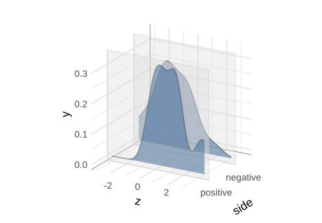
The slices lie on z, so the 2D layers keep x and y;
coord_3d(up = "y") stands the planes upright, one behind
the other. A numeric slicing variable places slices at its values on a
continuous scale. A factor uses its level order, and layers without the
slicing variable repeat in every slice. Plane visibility, labels and
opacity are set in facet_slices_3d().
Reference lines and annotations
geom_hline() and geom_vline() draw lines on
the floor, here at x = 0 and y = 0. annotate_3d() adds z
positions to the arguments of annotate(). Here it labels
the highest point of the cloud. Layers shows
arbitrary reference lines, brackets and dimension lines.
top <- cloud[which.max(cloud$z), ]
k + geom_hline(yintercept = 0, colour = "#5C6166") +
geom_vline(xintercept = 0, colour = "#5C6166") +
geom_point_3d(size = 2.5) +
annotate_3d("label", x = top$x, y = top$y, z = top$z, label = "highest",
hjust = -0.15) +
coord_3d()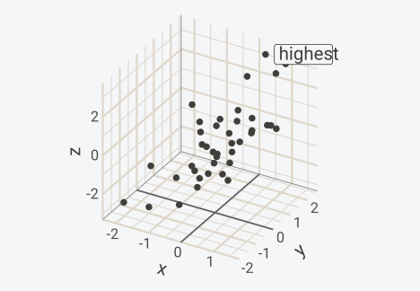
The label is a box drawn at the projected position of its point, over the whole scene, so points and faces in front of that position never cover it.
Contours and densities on the floor
The surface below has a peak and a hollow. surface
contains one row for each of 25 by 25 grid positions with the height
z.
surface <- expand.grid(x = seq(-2, 2, length.out = 25),
y = seq(-2, 2, length.out = 25))
surface$z <- with(surface, exp(-((x - 0.5)^2 + y^2)) -
0.6 * exp(-((x + 0.8)^2 + (y + 0.6)^2) / 0.5))Terraced filled contours
ggplot2’s own filled contour layer works with the z mapping. Each band occupies a horizontal plane at the midpoint of its lower and upper levels, and the ordered band factor uses a discrete fill scale. Holes inside a band remain open.
ggplot(surface, aes(x, y, z = z)) +
geom_contour_filled(bins = 5, colour = "white", linewidth = 0.15) +
scale_fill_manual(values = c("#7A4F9E", "#2E6F9E", "#2A7A7A", "#3F7A3D", "#9E5E0F")) +
coord_3d(elevation = 40)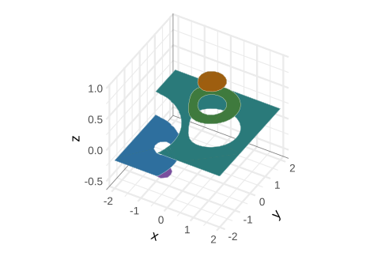
A contour map beneath a surface
geom_contour_filled_3d() with
plane = "floor" computes height bands from the same grid
and draws them flat on the floor, giving a contour map under the
surface. A higher camera elevation shows more of the floor.
ramp <- c("#DCEAF3", "#2E6F9E")
s <- ggplot(surface, aes(x, y, z = z))
s + geom_contour_filled_3d(plane = "floor", bins = 6) +
geom_surface_3d(fill = "grey85") +
scale_fill_gradient(low = ramp[1], high = ramp[2]) +
coord_3d(elevation = 40)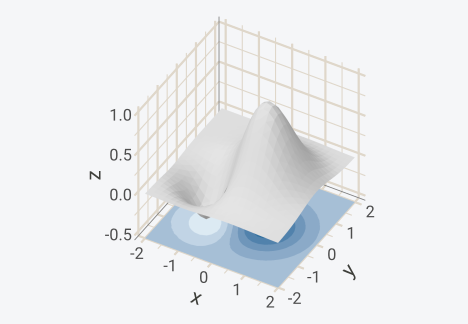
The bands are computed in the same z units as the surface, so the darkest band on the floor sits under the peak and the lightest under the hollow.
A density surface can stand over the observations it was estimated
from. faithful records the duration and the waiting time of
272 eruptions of the Old Faithful geyser.
stat_density_2d_3d() draws the estimated density, and the
eruptions are drawn on the floor with z = -Inf. The surface
is half transparent and the camera is raised, so the points under the
two peaks show through. The z title is set with labs()
because the density layer computes z and has no z mapping to name
it.
ggplot(faithful, aes(eruptions, waiting)) +
stat_density_2d_3d(n = 24, alpha = 0.5) +
geom_point_3d(aes(z = -Inf), size = 1) +
labs(z = "density") +
coord_3d(elevation = 50)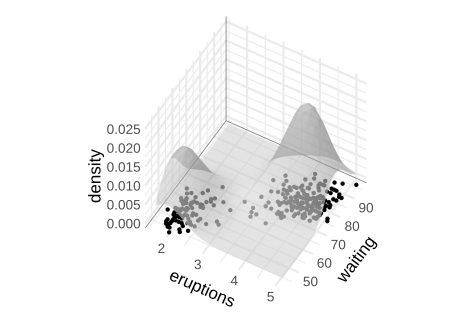
With plane = "floor", stat_density_2d_3d()
lays the same density grid flat on the floor and fills it by density, a
heat map under the surface.
ggplot(faithful, aes(eruptions, waiting)) +
stat_density_2d_3d(n = 24, alpha = 0.5) +
stat_density_2d_3d(n = 48, plane = "floor") +
labs(z = "density") +
coord_3d(elevation = 50)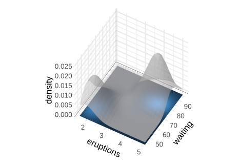
A 3D panel beside 2D panels
A ggplot3d plot is a ggplot object, so patchwork arranges it with 2D
plots. The surface is coloured by height and stacked above a 2D raster
of the same grid. Both plots use the same fill scale, so
guides = "collect" draws one legend for both.
heights <- scale_fill_gradient2(low = "#B5342B", mid = "#F2F2F2",
high = "#2E6F9E", limits = c(-0.6, 1), name = "z")
top <- s + stat_surface_3d(aes(fill = after_stat(z_mean))) +
heights + coord_3d()
map <- ggplot(surface, aes(x, y, fill = z)) + geom_raster() +
heights + coord_equal()
top / map + plot_layout(guides = "collect") &
theme(legend.position = "right")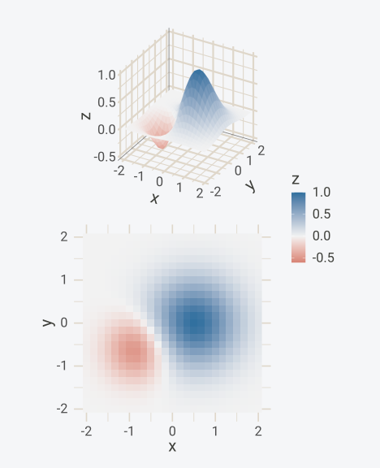
The 3D panel colours each triangle by its mean height, and the raster
colours each grid cell by its height. The colours agree because the two
plots share the limits of heights.
A profile shows one line of the surface at full resolution.
profile contains the grid rows with y = 0. The same rows
are drawn as a red path on the 3D surface and as a 2D line against
x.
profile <- surface[abs(surface$y) < 1e-9, ]
across <- s + geom_surface_3d(fill = "grey85") +
geom_path_3d(data = profile, colour = "#B5342B", linewidth = 1) +
coord_3d()
side <- ggplot(profile, aes(x, z)) +
geom_line(colour = "#B5342B", linewidth = 1)
across / side
The x axis has the same range in both panels, so the hollow near x = -1 and the peak near x = 0.5 appear at the same x in the path and in the profile.
Two camera views of one plot
The camera arguments of coord_3d() take one value per
panel. To show the same data from two directions, repeat the data once
per view, facet by the view, and give each panel its own angles.
views <- rbind(transform(surface, view = "default view"),
transform(surface, view = "from the opposite side"))
ggplot(views, aes(x, y, z = z)) + geom_surface_3d(fill = "grey85") +
facet_wrap(~view, ncol = 1) +
coord_3d(azimuth = c(-60, 120), elevation = c(30, 55))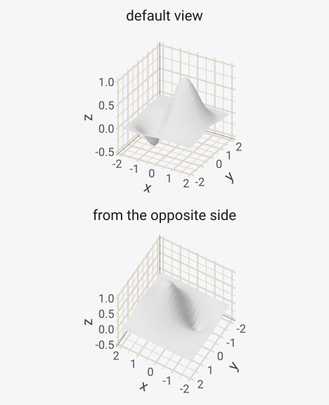
Both panels keep one magnification, so the surface has the same size
in each. Separate plots with their own coord_3d(), arranged
with patchwork, do the same for plots with different data.
base <- s + geom_surface_3d(fill = "grey85")
(base + coord_3d()) /
(base + coord_3d(azimuth = 120, elevation = 55))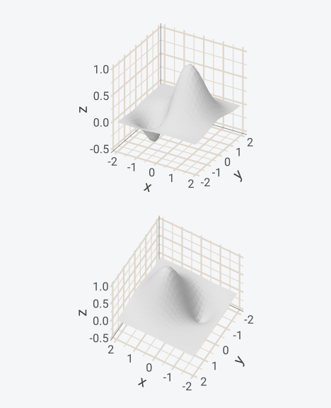
Camera and framing describes the angles. The z scale shows facets with fixed and free z ranges.
Titles and captions
Titles, subtitles and captions are drawn outside the panel in page coordinates, as in any ggplot2 plot.
base + coord_3d() +
labs(title = "Two Gaussian features",
subtitle = "Peak near (0.5, 0), hollow near (-0.8, -0.6)",
caption = "Heights on a 25 by 25 grid")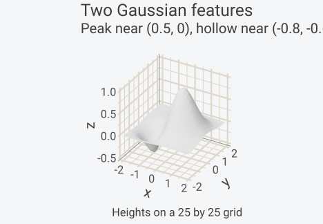
In a patchwork layout the same labs() call names one
panel, and plot_annotation() adds a title over the whole
arrangement.
across / side + plot_annotation(title = "Profile at y = 0")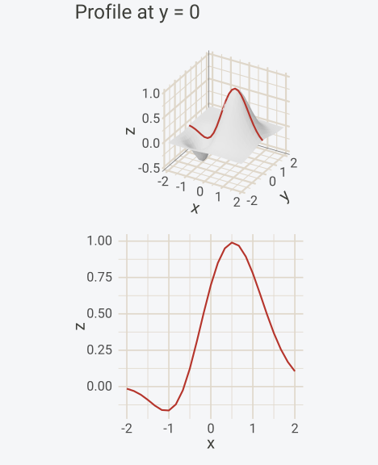
Where next
Layers and Surfaces, solids and fields: every three-dimensional geom and stat.
Visibility: how overlapping layers are sorted by depth.
Camera and framing: set the view and keep its bounds stable.